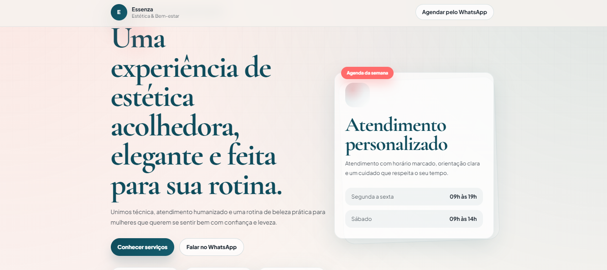

Portfólio pessoal
Design clean, presença vintage e código feito para destacar produtos digitais.
Sou desenvolvedora front-end e crio interfaces elegantes, funcionais e acessíveis. Este espaço vai reunir meus projetos em formato de catálogo, com foco em acabamento visual, organização e experiência.
Catálogo de projetos
Interfaces pensadas para serem claras, memoráveis e fáceis de usar.
Uma seleção em construção de projetos que refletem meu processo: estrutura, atenção aos detalhes e uma experiência visual consistente.
Próximo projeto
Dados que orientam decisões
Uma interface de acompanhamento que transforma informações em uma leitura simples e direta.
Próximo projeto
Presença digital com personalidade
Uma página de apresentação que equilibra identidade, conteúdo e uma jornada objetiva para o usuário.